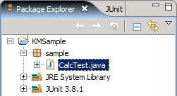

KikainekoMocker
User Guide

That's it! We're done with installing the plugin.
How to use Kinkaineko Mocker is explained.
TOC
Quick Start
Installing Kikaineko Mocker Plugin
- Download Kikaineko Mocker, and upzip it.
- Place the unzipped folder under the plugins folder of your eclipse directory.
That's it! We're done with installing the plugin.
* KikainekoMocker can also be used from the command line.
Creating Test Codes
- After installing the plugin, run your Eclipse platform.
- Here, we create a java project " KMSample ".
- Create package " sample " in the KMSample project.
- Create CalcTest.java under the sample package.
- The code given as an example at 「Test Code Sample」 is implemented here in CalcTest.java.
- Obviously, since the Calc class does not exist, Eclipse shows many errors.


Executing Kikaineko Mocker
- Right click CalcTest.java.
- Click on [Kikaineko Mocker] - [Generate Mock].
- A message may appear to warn you that the kikanekomocker.jar is needed to use the simulated class.
Confirm, and click "yes".
(This message will appear only at the first time of exceution) - Then you'll see that Calc.java is generated.


Executing the Test Class

Test Code Sample
A Sample Test Case for KikainekoMocker
KikaienkoMocker generates a simulated-class which passes a JUnit test case.
For example, it is possibe to generate a simulated-class which passes the following test case.
As you can see in the test case CalcTest, KikainekoMocker supports primitive types and objects. KikainekoMocker handles most kinds of data types.
(Refer to "Prerequisites & Constraints" for detailed description of supported data types.)
Also, it is possibe to generate a simulated-class which passes the following test case.
As you can see in the test case TokenTest, the same method is called several times, but KikanekoMocker can handle this with no problem at all.
With some tools, you can only define one return value per method, but KikainekoMocker decide the return value according to the method's execution order.
When the simulated-class to generate already exists, KikanekoMocker comments out the existing code and writes the new simulated code.
[to top]
For example, it is possibe to generate a simulated-class which passes the following test case.
package sample;
import junit.framework.TestCase;
public class CalcTest extends TestCase {
Calc calc;
protected void setUp() throws Exception {
super.setUp();
calc=new Calc();
}
public void testGet(){
assertEquals(0,calc.get(0,0));
}
public void testAdd(){
calc.set("+");
assertEquals(5,calc.get(2,3));
}
public void testAddInteger(){
calc.set("+");
Integer i20=new Integer(20);
Integer i30=new Integer(30);
Integer i50=new Integer(50);
assertEquals(i50,calc.get(i20,i30));
}
public void testMulti(){
calc.set("*");
assertEquals(6,calc.get(2,3));
}
public void testDiv(){
calc.set("/");
assertEquals(2,calc.get(4,2));
}
}
|
As you can see in the test case CalcTest, KikainekoMocker supports primitive types and objects. KikainekoMocker handles most kinds of data types.
(Refer to "Prerequisites & Constraints" for detailed description of supported data types.)
Also, it is possibe to generate a simulated-class which passes the following test case.
package sample;
import junit.framework.TestCase;
public class TokenTest extends TestCase {
Token token;
protected void setUp() throws Exception {
super.setUp();
}
public void testNext(){
token=new Token("a=10*c;");
assertEquals("a",token.next());
assertEquals("=",token.next());
assertEquals("10",token.next());
assertEquals("*",token.next());
assertEquals("c",token.next());
assertEquals(";",token.next());
}
public void testLength(){
token=new Token("a=10*c;");
assertEquals("6",token.length());
}
}
|
As you can see in the test case TokenTest, the same method is called several times, but KikanekoMocker can handle this with no problem at all.
With some tools, you can only define one return value per method, but KikainekoMocker decide the return value according to the method's execution order.
When the simulated-class to generate already exists, KikanekoMocker comments out the existing code and writes the new simulated code.
[to top]
How to Write Test Codes
How to Write Test Cases for KikainekoMocker
KikainekoMocker evaluates ordinary test cases, but there are a few points
in writing test cases for KikainekoMocker.
Refer to "Prerequisites & Constraints" for detailed descriptions, at the same time.
Some pointers in writing test cases for KikainekoMocker will be explained.
Refer to "Prerequisites & Constraints" for detailed descriptions, at the same time.
Some pointers in writing test cases for KikainekoMocker will be explained.
Defining the Simulated-Class for Generation
KinkainekoMocker judges which class to generate as the simulated-class by the
fiels of the test case.

In this case, the simulated-class Calc is generated.
If an interface such as "
If a superclass such as "
The java file to generate is determined from the instantiation of the defined field.
For example, when the following is written in the test case, KikainekoMocker generates Calc.java.
Also, KikainekoMocker supports instantiation by DI (Dependency Injection) or factory methods.
KikainekoMocker executes the DI or factory method. If it succeeds and an object is returned, KikainekoMocker retrieves the class name, using it for the simulated-class to generate.
For example, whent the following is written in the test case, KikainekoMocker generates HogeInterfaceImpl.java.
In this case, the simulated-class Calc is generated.
- Only define one field.
- At this point, do not instantiate, or assign null for its value.
If an interface such as "
SomeInterface calc;" is specified,
a simulated-class which implements that class is generated.If a superclass such as "
SomeSuperClass calc;" is specified,
a simulated-class which extends that class is generated.The java file to generate is determined from the instantiation of the defined field.
For example, when the following is written in the test case, KikainekoMocker generates Calc.java.
calc = new Calc();
|
Also, KikainekoMocker supports instantiation by DI (Dependency Injection) or factory methods.
KikainekoMocker executes the DI or factory method. If it succeeds and an object is returned, KikainekoMocker retrieves the class name, using it for the simulated-class to generate.
For example, whent the following is written in the test case, KikainekoMocker generates HogeInterfaceImpl.java.
HogeInterface hoge;
hoge = (HogeInterface)di.getComponent();
|
Define the Result of a Method with "assertEquals"
If a method of a simulated-class has a return value, specify it with
"
(Do not use

If written without using
assertEquals()".(Do not use
assertEquals(), if the method does not have a return
value, i.e. void return type.)
If written without using
asserEquals() as follows,
KikainekoMocker cannnot determine what to return as the result.
int i = calc.get();
|
Throwing Exceptions
When a method of the simulated-class throws an exception,
use

In the example above, when
It is possible to specify custom exceptions to be thrown from methods.
[to top]
try / catch / fail statements.
KikainekoMocker determined that the method written before the
fail() statement, throws an exception. KikainekoMocker
determines that the first exception caught in the catch
statement, is the exception thrown from the relevant method.
In the example above, when
calc.set("a") is called an
IllegalArgumentException is thrown.It is possible to specify custom exceptions to be thrown from methods.
[to top]
Prerequisites & Constraints
Prerequisites
KikainekoMocker parses test cases following Java 1.4 grammar specifications,
but is not complete. Here, detailed differences is shown.
Primitive Types
KikainekoMocker cannot handle all primitive types. In particular, the following types are not supported.- float (cannot handle format other than
1.0f)
Constraints in Writing Test Cases
When writing test cases for KikainekoMocker, the following must be obeyed.
Some of these constraints will be resolved in the future.
[to top]
Some of these constraints will be resolved in the future.
- Declare the simulated-class to be generated as a class field. With
this declaration, KikainekoMocker determines the simulated-class.
Instantiate the class in thesetUp()or each test method. - Do not declare fields other than the target simulated-class.
- Indicate the result to return with
assertEquals().
WhenassertEquals()is not used, KikainekoMocker determines the method returns a void result. - When using
assertEquals(Object, Object), please write in the order of expected value and actual value. - Does not support static methods of the simulated-class.
- Cannot use multidimensional arrays.
- Cannot use control flow statements such as
for,if,while, andswitch.
[to top]
Executing from Text
User Interface
Another Way to Execute KikainekoMocker
Ordinarily, KikainekoMocker is to be used as an Eclipse Plugin,
but it can be called from a text format.
The
In particular, execute the following method of the
Specify the file path name of the test case, a relative path name from the Eclipse project, as a
The
[to top]
The
MockMaker class is used.In particular, execute the following method of the
MockMaker class.
public static void main(String[] args){
try{
String[] ss={"src\\sample\\SampleTest.java"};
MockMaker.main(ss);
}catch(Throwable t){
t.printStackTrace();
}
}
|
Specify the file path name of the test case, a relative path name from the Eclipse project, as a
String array("ss" in the code above). The
MockMaker class exists under the package
org.kikaineko.mock.textui.
[to top]